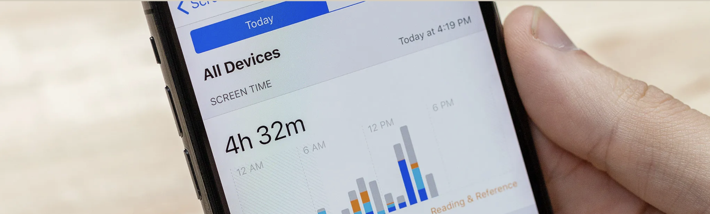

Skærmen
Guide: Skab mere ro i din digitale hverdag
Telefoner og computere er en stor del af vores hverdag. Men konstante notifikationer, sociale medier og mange apps kan skabe en følelse af uro og distraktion. Hvis din telefon ofte tager din opmærksomhed, kan det være et godt sted at starte. Her er nogle enkle trin, der kan hjælpe dig med at skabe mere ro i din digitale hverdag.
Trin 1 – Slå unødvendige notifikationer fra
Notifikationer afbryder din opmærksomhed og gør det sværere at fokusere.
To Do:
- Gå ind i dine telefonindstillinger
- Find apps der sender notifikationer
- Slå notifikationer fra på apps du ikke behøver
Trin 2 – Ryd op på din startskærm
Mange apps på startskærmen gør telefonen mere fristende at bruge.
To Do:
- Flyt distraherende apps væk fra startskærmen
- Saml apps i mapper
- Behold kun de vigtigste apps synlige
Trin 3 – Lav skærmfrie pauser
Din hjerne har brug for pauser fra konstant information.
To Do:
- Læg telefonen væk når du spiser
- Undgå telefonen den første time efter du vågner
- Tag små pauser uden skærm i løbet af dagen
Trin 4 – Lav en digital aftenrutine
Skærme før sengetid kan gøre det sværere at falde i søvn.
To Do:
- Stop med at bruge telefonen 30 minutter før sengetid
- Slå nattilstand til på din telefon
- Lav en rolig rutine før du går i seng
Reflektér over dit skærmforbrug
Tag et øjeblik og tænk over, hvordan du bruger dine digitale enheder i løbet af dagen.
- Hvor ofte tjekker du din telefon uden egentlig at have brug for det?
- Er der bestemte apps, der ofte tager din opmærksomhed?
- Hvornår på dagen bruger du mest tid foran en skærm?
Ved at blive mere bevidst om dine digitale vaner kan du lettere finde små steder, hvor du kan skabe mere ro og fokus i din hverdag.
Prøv at vælge én lille ændring fra guiden og se, hvordan det påvirker din dag.